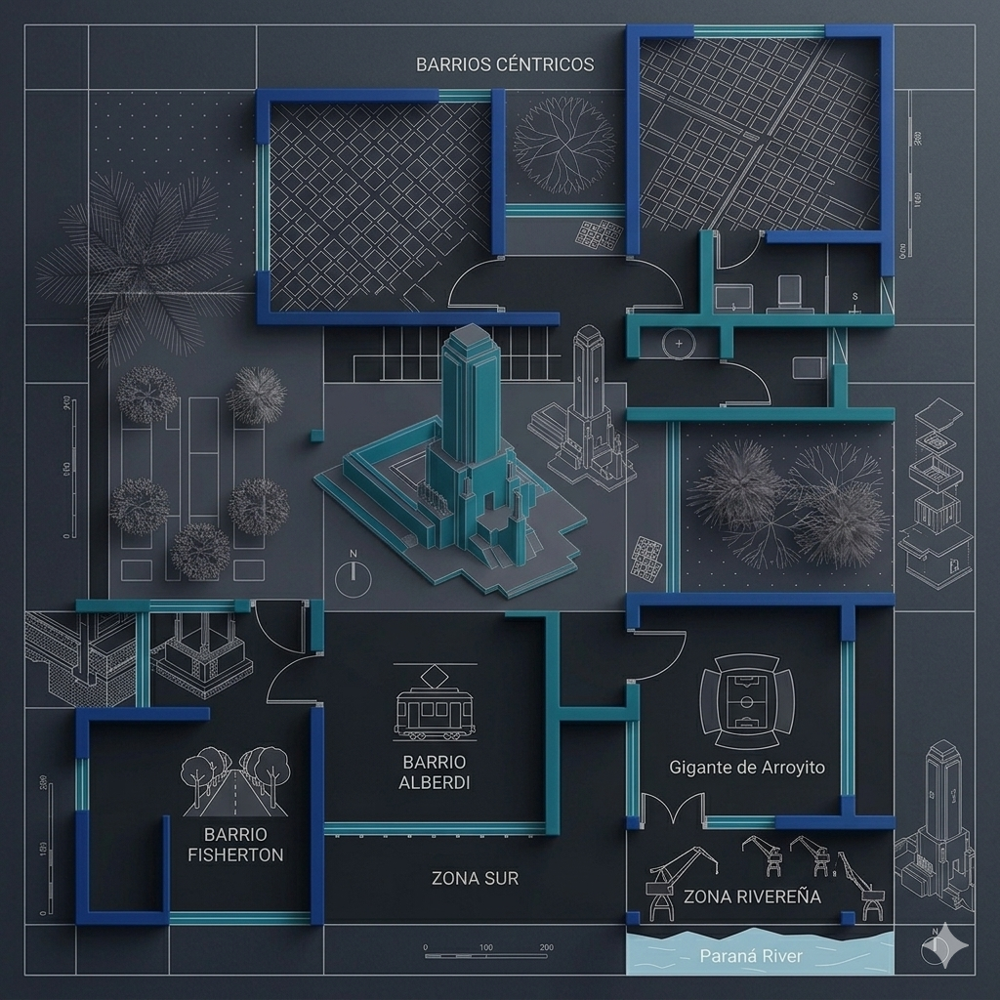

Tu propiedad tiene un precio.
Dataprop te lo explica.

Cómo nació El proyecto
Dataprop surge en el marco de la Maestría en Ciencia de Datos de la Universidad Austral. Es un proyecto de investigación académica que aplica machine learning sobre publicaciones públicas del mercado inmobiliario para estimar el valor de un departamento.
Más allá de devolver un número, el modelo explica los factores que empujan ese precio — ubicación, características de la propiedad, vecindad espacial y el lenguaje del aviso.
Tres pilares
Metodología de trabajoObservamos
Analizamos miles de publicaciones públicas del mercado inmobiliario en Rosario.
Aprendemos
Un modelo de machine learning genera variables nuevas — ubicación, lenguaje del aviso, vecindad espacial.
Explicamos
Cada estimación viene con los factores que la empujan. Sin caja negra.
Aviso académico
Dataprop es una herramienta de investigación académica desarrollada con fines exclusivamente educativos. No constituye una tasación profesional ni reemplaza el trabajo de un tasador matriculado. Los datos provienen de publicaciones públicas del mercado y los valores devueltos son estimaciones de referencia, sujetas al estado del mercado y a los datos disponibles al momento de la consulta. Toda decisión basada en estos datos es responsabilidad del usuario.